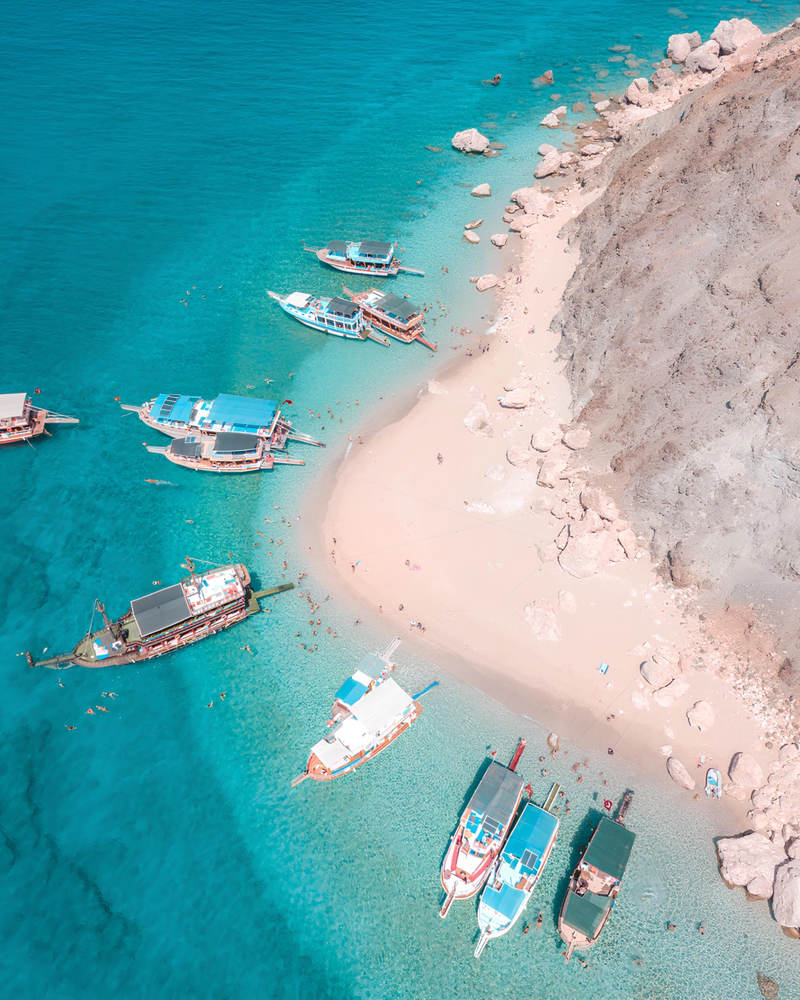
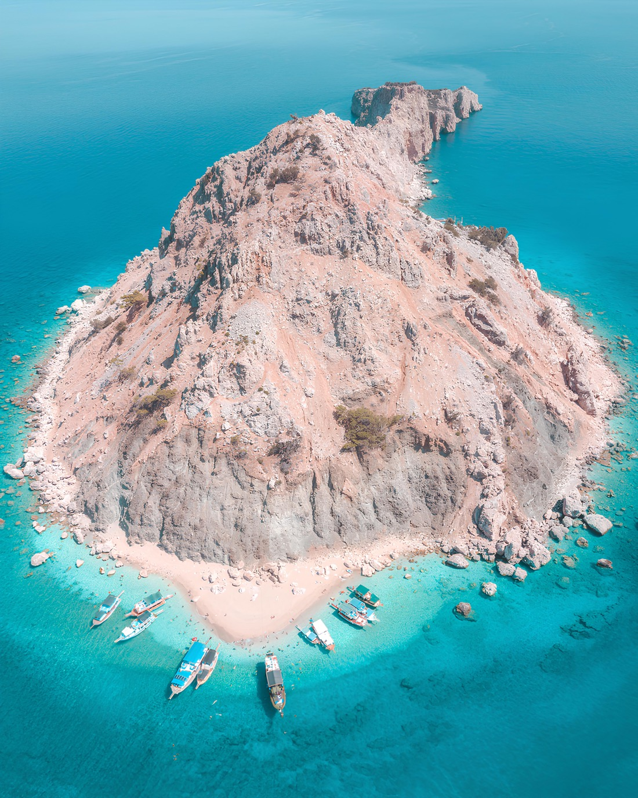
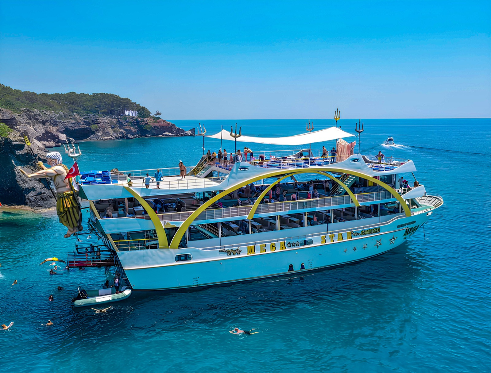
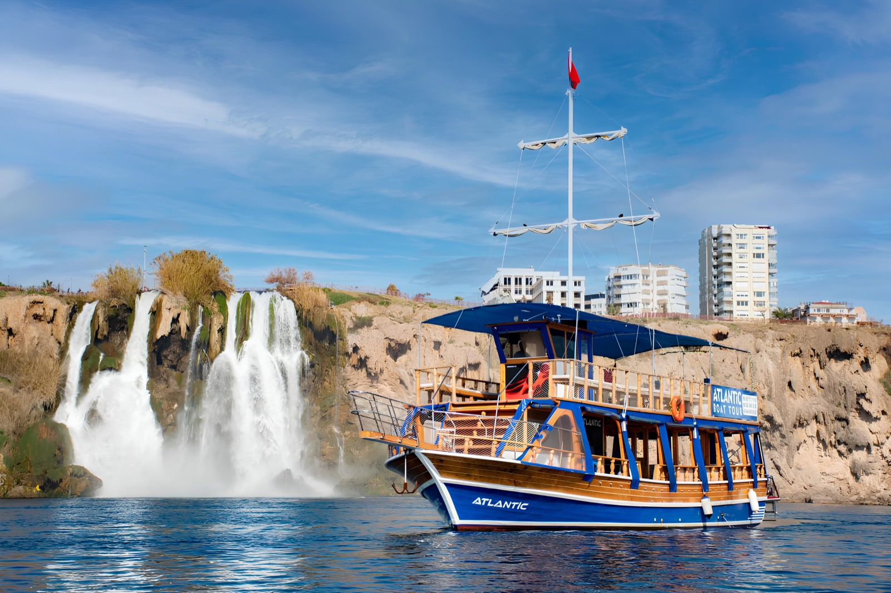

Suluada Tekne Turu
Adrasan Limanı’ndan kalkış, turkuaz koylar ve tam günlük yüzme odaklı rota.
Suluada müsaitliği sor →Turkuaz koylarda yüzmek, Akdeniz kıyısını denizden görmek veya sakin bir gün batımı gezisine katılmak için Antalya tekne turu seçeneklerini karşılaştırın. Kalkış limanı, transfer süresi ve tekne atmosferi doğru seçimin anahtarıdır.

Her rota farklı bir deneyim sunar: Suluada berrak koyları, Kemer hareketli tekneleri, Düden kıyısı ise şehre yakınlığıyla öne çıkar.

Adrasan Limanı’ndan kalkış, turkuaz koylar ve tam günlük yüzme odaklı rota.
Suluada müsaitliği sor →
Kemer kıyıları, müzikli tekne atmosferi ve farklı koylarda yüzme molaları.
Kemer programını sor →
Antalya merkezine yakın, şelale manzaralı ve daha kısa kıyı gezileri.
Kıyı turunu sor →Antalya’da “tekne turu” adı altında çok farklı programlar sunulur. En önemli fark, otelinizden limana ulaşım süresi ve teknenin gün içindeki atmosferidir. Suluada için Adrasan’a kara transferi gerekir; Antalya kıyı turları ise şehirde konaklayanlar için daha kısa ulaşım sunar. Kemer tekneleri aile odaklı, sakin veya müzikli seçeneklere ayrılabilir.
Suluada teknelerinin büyük bölümü Adrasan Limanı’ndan kalkar. Antalya veya Lara’dan katılan misafirlerin Adrasan’a transfer süresini hesaba katması gerekir. Erken alınış saati ve geç dönüş olabileceğinden küçük çocuklar veya hareket kısıtlılığı olan misafirler için transfer planı önceden sorulmalıdır.
Tam günlük teknelerin çoğunda temel bir öğle yemeği bulunur. Menü ve içeceklerin dahil olup olmadığı tekneye göre değişir. Özel diyet, alerji veya çocuk menüsü ihtiyacını rezervasyon sırasında belirtmek gerekir.
Tekne gezisine katılmak için yüzme bilmek şart değildir; ancak yüzme molalarında güvenlik kurallarına uyulmalıdır. Can yeleği, merdiven erişimi ve teknedeki gölgelik alan gibi detaylar tekneye göre değişir. Denize girmeyecek misafirler için güverte konforu ayrıca sorulabilir.
Daha sakin müzik, gölgelik alan, kolay iniş merdiveni ve kısa transfer aileler için önemlidir. Çok yüksek sesli eğlence konseptleri veya uzun Adrasan transferi her aileye uygun olmayabilir. Çocuk yaşı ve otel bölgesi paylaşıldığında uygun tekne daha doğru seçilir.
Kaptanlık ve yerel yetkililerin güvenlik değerlendirmesi esastır. Rüzgâr ve deniz durumu rotayı değiştirebilir; ciddi koşullarda tarih değişikliği veya iptal uygulanabilir. Kesin koşullar rezervasyon onayında belirtilir.
Denize çıkmadan önce kısa yanıtlar.
Sitedeki seçili programlar kişi başı ₺1.150’den başlar. Tarih, tekne, transfer bölgesi ve yaş grubuna göre güncel fiyat değişebilir.
Rotaya göre Adrasan, Kemer veya Antalya kıyısındaki limanlar kullanılır. Transferli pakette alınış noktası rezervasyonla birlikte bildirilir.
Çoğu tur teknesinde temel tuvalet ve duş imkânı bulunur; tekneye özel donanım rezervasyon sırasında teyit edilmelidir.
Mayo, havlu, güneş koruyucu, şapka, yedek kuru kıyafet ve kaymayan terlik önerilir. Değerli eşyaları suya karşı korumak faydalıdır.
Deniz gününü şehir, kültür veya macera rotasıyla tamamlayın.